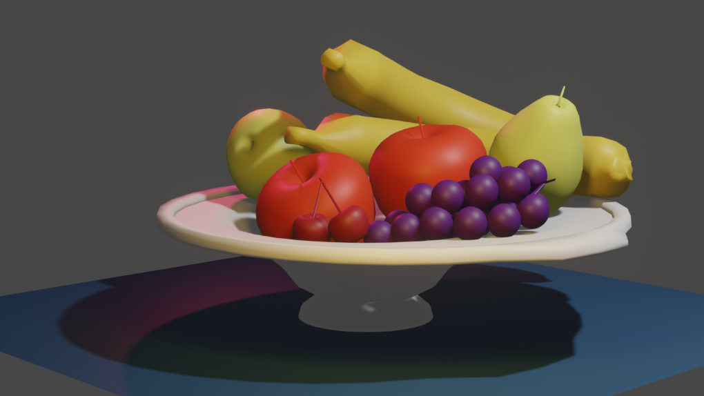

Blender is an open source software used mainly for 3D animation and modelling.
Through this website, I will provide you with a few brief tips to start off using Blender.
When opening Blender, you are faced with a cube in the centre of the workspace. This cube is a Mesh. In order to create a new mesh, go on Add, Mesh then choose the object type you desire.
Once you have a mesh object, you can manipulate its shape as you wish using the following tools:
Going on the Modelling window will allow you to manipulate your object while keeping a certain structure to it. You can:
...for starters, although there are many other options in the Modelling window.
Going on the Modelling window will allow you to manipulate your object while keeping a certain structure to it. You can:
...for starters, although there are many other options in the Modelling window.
Here is a turntable of the fruit bowl I modelled in Blender, using the tools mentioned above:
That is all for this introdution! Please click on this link for official Blender Tutorials.